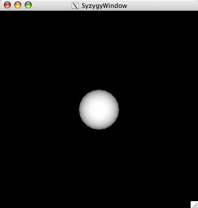
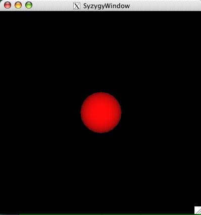
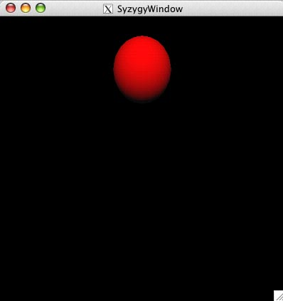
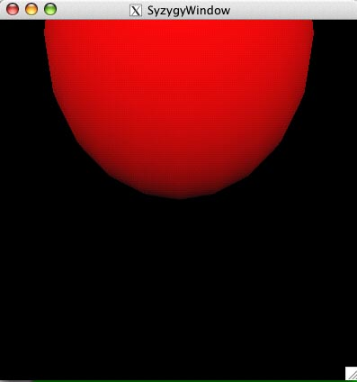
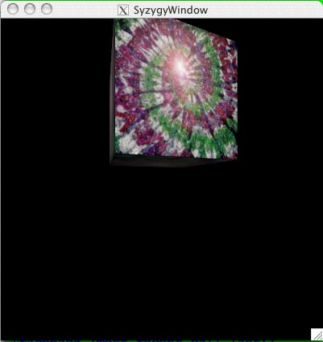
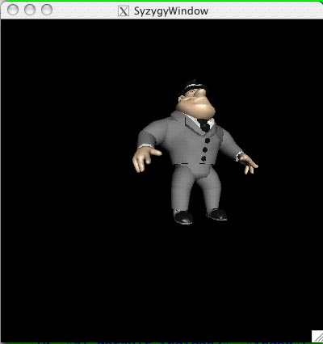
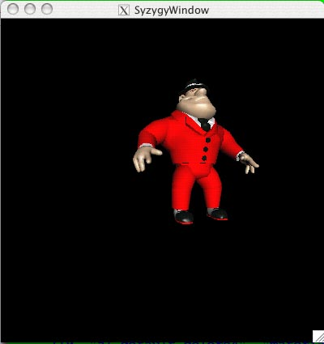
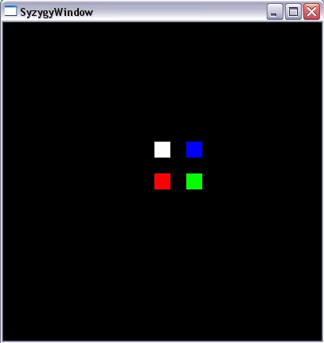
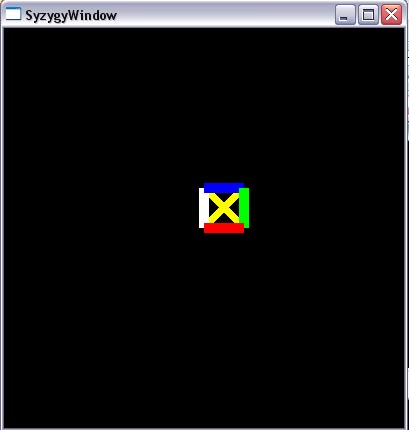
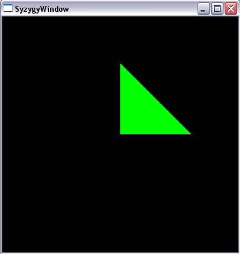

Syzygy: Scene Graph Tutorial
This tutorial will walk you through working with the Syzygy scene graph from the Python prompt and introduce you to the concept of peer-to-peer reality. To follow this tutorial, you'll need to either have compiled the szg library and the Syzygy Python bindings or have installed a Syzygy SDK as appropriate for your system.
This tutorial is complimentary to the chapter describing the C++ scene graph API.
There are several scene graph examples written in Python.
Graphics Peers: Important Phleet Database Parameters
The graphics database requires a few Phleet parameters to be set for proper operation. For every computer upon which you want to run a display, you should have
my_computer_name SZG_RENDER texture_path /the/textures/here my_computer_name SZG_RENDER text_path /the/text/bitmaps/here
Furthermore, it will be easier to load and save snapshots of graphics peers if you set the SZG_PEER/path on each computer upon which you run a graphics peer. Files will be automatically loaded and saved to this directory.
my_computer_name SZG_PEER path /the/peer/files/go/here
>>> from PySZG import *
>>> e = ezview()
>>> c = arPerspectiveCamera()
>>> c.setSides(-0.1,0.1,-0.1,0.1)
>>> c.setNearFar(0.1,100)
>>> c.setPosition(0,5,0)
>>> c.setTarget(0,0,0)
>>> c.setUp(0,1,0)
>>> c.setPosition(0,0,5)
>>> g = arGraphicsDatabase()
>>> r = g.getRoot()
>>> light = arLight()
>>> light.lightID = 0
>>> light.position = arVector4(0,0,1,0)
>>> light.diffuse = arVector3(1,1,1)
>>> s = arSphereMesh(20)
>>> m = r.new("material")
>>> s.attachMesh(m)
>>> e.draw(g,c)
>>> l = r.new("light")
>>> l.setLight(light)
>>> e.draw(g,c)

>>> mat = m.get() >>> mat.diffuse = arVector3(1,0,0) >>> m.set(mat) >>> e.draw(g,c)

>>> t = g.insertNodeRef(r,m,"transform")
>>> t.set(ar_TM(0,3,0))
>>> e.draw(g,c)
>>> g.ps()
Database structure:
(0, "root", "root")
(7, "szg_default_7", "light")
(8, "szg_default_8", "transform")
(1, "szg_default_1", "material")
(2, "sphere.points", "points")
(3, "sphere.indices", "index")
(4, "sphere.normal3", "normal3")
(5, "sphere.tex2", "tex2")
(6, "sphere.drawable", "drawable")
>>> t.set(ar_TM(0,3,0)*ar_SM(3,3,3))
>>> e.draw(g,c)


from PySZG import *
import time
c = arPerspectiveCamera()
c.setSides(-0.1, 0.1, -0.1, 0.1)
c.setNearFar(0.1, 100)
c.setPosition(0, 0, 5)
c.setTarget(0, 0, 0)
c.setUp(0, 1, 0)
g = arGraphicsDatabase()
g.setTexturePath("/Users/schaeffr/Texture")
r = g.getRoot()
light = arLight()
light.lightID = 0
light.position = arVector4(0,0,1,0)
light.diffuse = arVector3(1,1,1)
l = r.new("light")
l.set(light)
t = r.new("transform")
t.set(ar_TM(0,2,0)*ar_RM('y', ar_convertToRad(20))*ar_SM(3,3,3))
txt = t.new("texture")
txt.set("WallTexture1.ppm")
cube = arCubeMesh()
cube.attachMesh(txt)
e = ezview()
e.draw(g,c)
time.sleep(5)

from PySZG import *
import time
c = arPerspectiveCamera()
c.setSides(-0.1, 0.1, -0.1, 0.1)
c.setNearFar(0.1, 100)
c.setPosition(0, 0, 5)
c.setTarget(0, 0, 0)
c.setUp(0, 1, 0)
g = arGraphicsDatabase()
dgSetGraphicsDatabase(g)
g.setTexturePath("/Users/schaeffr/Texture")
r = g.getRoot()
light = arLight()
light.lightID = 0
light.position = arVector4(0,0,1,0)
light.diffuse = arVector3(1,1,1)
l = r.new("light")
l.set(light)
t = r.new("transform","transform_node")
t.set(ar_TM(1,1,0)*ar_RM('y', ar_convertToRad(20))*ar_SM(3,3,3))
o = arOBJ()
o.readOBJ("/Users/schaeffr/Data/OBJ/al.obj")
o.normalizeModelSize()
o.attachMesh("al", "transform_node")
e = ezview()
e.draw(g,c)
time.sleep(5)

m = g.find("al.default.colors3")
mat = m.get()
mat.diffuse = arVector3(1,0,0)
m.set(mat)

from PySZG import *
import time
c = arPerspectiveCamera()
c.setSides(-0.1, 0.1, -0.1, 0.1)
c.setNearFar(0.1, 100)
c.setPosition(0, 0, 5)
c.setTarget(0, 0, 0)
c.setUp(0, 1, 0)
g = arGraphicsDatabase()
r = g.getRoot()
state = r.new("graphics state")
state.set(("point_size",20.0))
p = state.new("points")
clr = p.new("color4")
d = clr.new("drawable")
p.set([arVector3(0,0,0),
arVector3(1,0,0),
arVector3(1,1,0),
arVector3(0,1,0)])
clr.set([arVector4(1,0,0,1),
arVector4(0,1,0,1),
arVector4(0,0,1,1),
arVector4(1,1,1,1)])
d.set(("points", 4))
e = ezview()
e.draw(g,c)
time.sleep(5)

from PySZG import *
import time
c = arPerspectiveCamera()
c.setSides(-0.1, 0.1, -0.1, 0.1)
c.setNearFar(0.1, 100)
c.setPosition(0, 0, 5)
c.setTarget(0, 0, 0)
c.setUp(0, 1, 0)
g = arGraphicsDatabase()
r = g.getRoot()
state = r.new("graphics state")
state.set(("line_width",10.0))
p = state.new("points")
clr = p.new("color4")
i = clr.new("index")
d = i.new("drawable")
p.set([arVector3(0,0,0),
arVector3(1,0,0),
arVector3(1,1,0),
arVector3(0,1,0)])
clr.set([arVector4(1,0,0,1),
arVector4(1,0,0,1),
arVector4(0,1,0,1),
arVector4(0,1,0,1),
arVector4(0,0,1,1),
arVector4(0,0,1,1),
arVector4(1,1,1,1),
arVector4(1,1,1,1),
arVector4(1,1,0,1),
arVector4(1,1,0,1),
arVector4(1,1,0,1),
arVector4(1,1,0,1)])
i.set([0,1, 1,2, 2,3, 3,0, 0,2, 1,3])
d.set(("lines", 6))
e = ezview()
e.draw(g,c)
time.sleep(5)

from PySZG import *
import time
c = arPerspectiveCamera()
c.setSides(-0.1, 0.1, -0.1, 0.1)
c.setNearFar(0.1, 100)
c.setPosition(0, 0, 5)
c.setTarget(0, 0, 0)
c.setUp(0, 1, 0)
g = arGraphicsDatabase()
r = g.getRoot()
state = r.new("graphics state")
state.set(("lighting", "false"))
m = state.new("material")
mat = arMaterial()
mat.diffuse = arVector3(0,1,0)
m.set(mat)
p = m.new("points")
i = p.new("index")
n = i.new("normal3")
d = n.new("drawable")
p.set([arVector3(0,0,0),
arVector3(3,0,0),
arVector3(3,3,0),
arVector3(0,3,0)])
n.set([arVector3(0,0,1),
arVector3(0,0,1),
arVector3(0,0,1)])
i.set([0,1,3])
d.set(("triangles", 1))
e = ezview()
e.draw(g,c)
time.sleep(5)

from PySZG import *
import time
c = arPerspectiveCamera()
c.setSides(-0.1, 0.1, -0.1, 0.1)
c.setNearFar(0.1, 100)
c.setPosition(0, 0, 5)
c.setTarget(0, 0, 0)
c.setUp(0, 1, 0)
g = arGraphicsDatabase()
r = g.getRoot()
state = r.new("graphics state")
state.set(("lighting", "false"))
m = state.new("material")
mat = arMaterial()
mat.diffuse = arVector3(0.8,1,0.8)
m.set(mat)
texture = m.new("texture")
texture.set("WallTexture2.ppm")
p = texture.new("points")
i = p.new("index")
n = i.new("normal3")
t2 = n.new("tex2")
d = t2.new("drawable")
p.set([arVector3(0,0,0),
arVector3(3,0,0),
arVector3(3,3,0),
arVector3(0,3,0)])
n.set([arVector3(0,0,1),
arVector3(0,0,1),
arVector3(0,0,1),
arVector3(0,0,1)])
t2.set([arVector2(0,0),
arVector2(1,0),
arVector2(1,1),
arVector2(0,1)])
i.set([0,1,2,3])
d.set(("quads", 1))
e = ezview()
e.draw(g,c)
time.sleep(5)

Scene Graph: Saving and Reloading Your Work
You should be certain that your Phleet parameters are set as in this section, especially the SZG_PEER/path. We assume you have worked through the section on loading objects.
First, save your database. You are writing it in binary format (which is faster to load). Note the file type: .szg.
peer.writeDatabase("test-al.szg")
A file "test-al.szg" should now be in the directory given by SZG_PEER/path on
the computer you are running the Python prompt. Next, quit the Python prompt
and exit from the reality peer workspace that was displaying your work.
You will now get back to the point where you were before. Restart the workspace, as before ("szg-rp work1"). Enter a new Python prompt.
To load your previously saved scene:
peer.readDatabase("test-al.szg")
Again, if this suceeds, it will output "1". Note that this does not look
exactly the same as it did before. The difference is the translation of the
peer "target" within the workspace "work1". To restore: